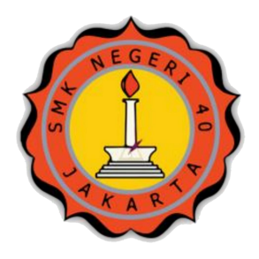

Education
SMKN 40 Jakarta
Software Engineering
—
Studying software development with a focus on programming, web applications, databases, secure coding, and cybersecurity.
Show education details
- ProgrammingHTML, CSS, JavaScript, and PHP for building web interfaces and applications.
- DatabaseRelational database concepts and MySQL fundamentals.
- WordPressContent management, theme structure, and practical website workflows.
- Software EngineeringSecure coding, project collaboration, and application development practices.